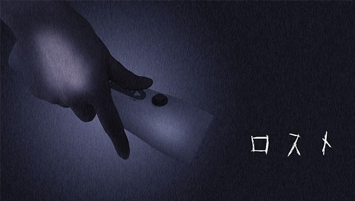

作品概要
TGS
2016
lost-ロスト-
-
開発期間
約5ヶ月
-
開発人数
11人 ※途中脱退や参加も含めると15人
内訳
リーダー兼コントローラー制作 1人
プランナー 3人
プログラマー(ゲーム) 3人
3Dデザイナー 3人
2Dデザイナー1人
-
開発言語・ツール
C#/C++/Unity5.3x/Arduino/VisualStudio(2013/2015)/Maya(2015/2016)/PhotoShop/Illustrator/etc.
-
役割
プログラマー(ゲーム)と全体の指示
-
概要
自作懐中電灯型コントローラーによる探索ゲーム
『懐中電灯で照らせ、真実を』
少女が目を覚ますと、そこは真っ暗な家の中だった。
ここは自分の家のはず。それなのに、少女はどこか不気味に感じてしまう。
不安になる少女に残されたのは、手元にあった一枚のメモと懐中電灯。
※学校TGS特設ページより
GitHub詳細
3色の懐中電灯を切り替えながらギミックを解いて進むシステム。
ヒントとなるメモを集めながら、どうして家にだれもいないのか、一体家族はどうしたのか、探ぐる。
このゲームでは、下級生の手助けという形で参加しました。
プログラムは基本は一年に覚えてもらうために、アイテムクラスを作成し、そこを改造していく形で実装し、プログラムの楽しさと達成感を覚えてもらえるよう努力しました。
アイテムクラスは、アタッチされたオブジェクトを見ると、シェーダーがトゥーンに変わり、見ていることを教え、反応するライトの種類、アイテムの種類（メモ、ギミック、電池など）、注視する時間、アイテム取得なら表示するUIなどを選択して、別途スクリプトが必要な場合は、Switch文に書き加えていく形にするなど、自分なりに考えて作っていきました。